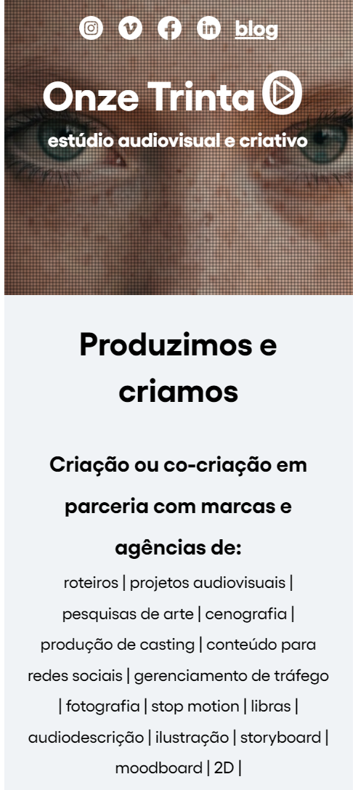

Exemples
PARC: Alignment
Youtube
https://www.youtube.comOn YouTube's homepage, you can observe a clear example of the alignment principle. The videos and various sections are neatly arranged in a grid format. The alignment creates a sense of order and organization, making it easy for users to navigate and find content efficiently. Elements are aligned both horizontally and vertically, providing a clean and balanced layout.
Rule of Thirds
LinkedIn's profile page often adheres to the Rule of Thirds in its design. The user profile picture, headline, and key information are strategically positioned, following the rule of thirds grid. This creates a visually appealing and balanced layout, directing the viewer's attention to key elements. Additionally, the content in the feed is often structured to follow this principle, enhancing the overall visual harmony of the platform.
Visual Hierarchy
OnzeTrinta
https://www.onzetrinta.comVisual Hierarchy is crucial for guiding users through content, and Onzetrinta's website exemplifies this principle. The use of contrasting colors, font sizes, and placement of key elements ensures that users are drawn to the most important information first. This helps in creating a user-friendly experience, where visitors can quickly understand the hierarchy of information on the page.